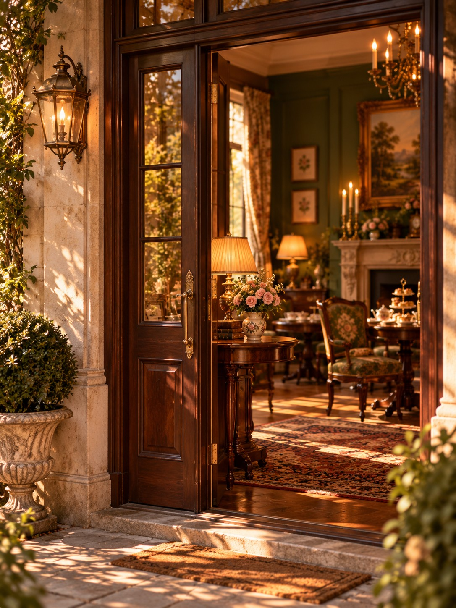
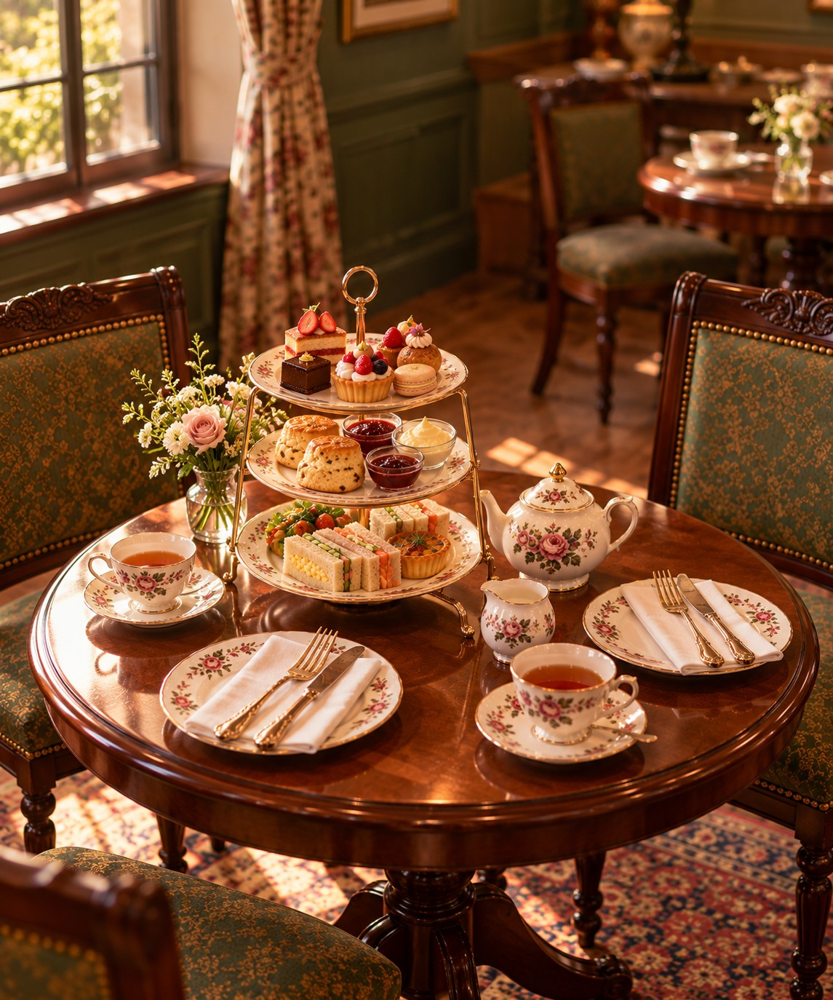
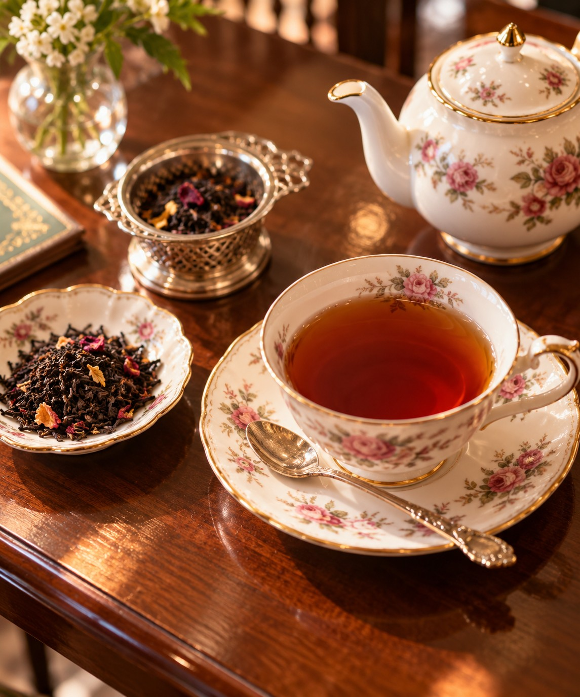
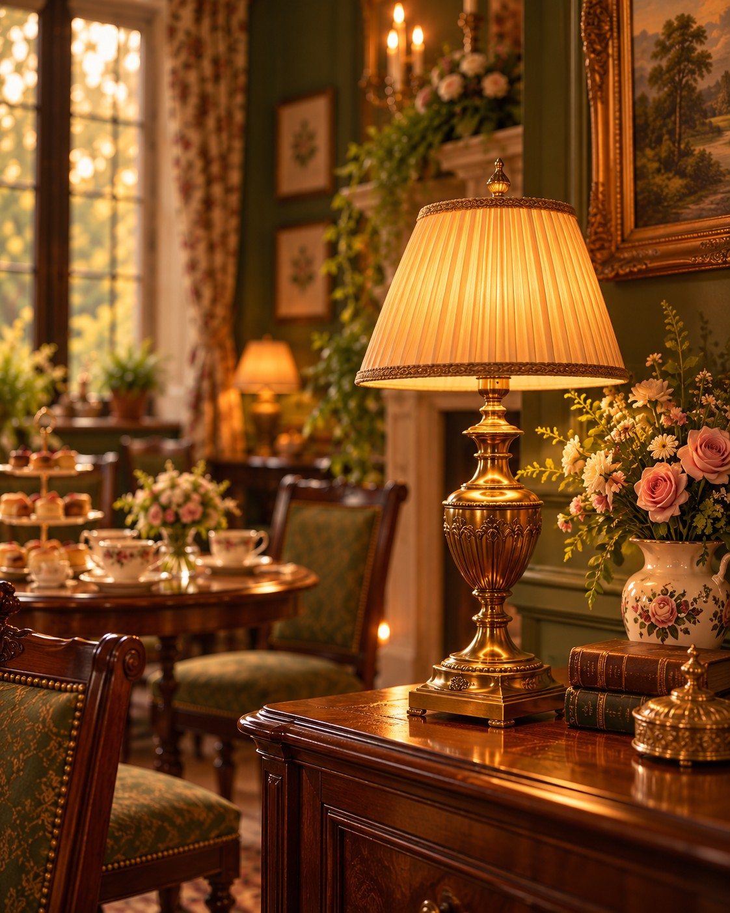

About Us
私たちについて

Our Story
紅茶の香りに、心ほどけるひととき。
Camellia Tea Salonは、紅茶の香りとともに、
日常から少し離れた穏やかなひとときを
お届けするティーサロンです。
英国アンティークの落ち着いた空間に、
ほんの少しフランスの
洗練を添えて、
おひとりでも、大切な方とでも、
心地よく過ごせる場所を目指しました。
どうぞお気に入りの一杯とともに、
ゆっくりとした午後を
お楽しみください。

Our Tea
一杯の紅茶に、心を込めて。
茶葉の豊かな風味を、
一杯ずつ
丁寧に引き出して。
定番の紅茶から、季節を感じるブレンドまで、
その日の気分に寄り添う一杯をご用意しています。
アンティークの器に注がれる紅茶とともに、
ゆっくりと流れる時間をお楽しみください。

Our Space
時を重ねた美しさに、包まれて。
英国アンティークの家具が並ぶ、どこか懐かしく
温もりのある空間。
深い緑の椅子や木の風合いを感じるテーブル、
やわらかな灯りが、穏やかな時間を演出します。
おひとりでも、大切な方とでも。日常の喧騒を忘れて、
思い思いのひとときをお過ごしください。

横にスクロールしてご覧いただけます
Invitation
あなたの日常に、心ほどけるひとときを。
一杯の紅茶と、季節のスイーツ。
あなただけのティータイムを。
ふらりと立ち寄りたくなる、
そんな場所でありますように。